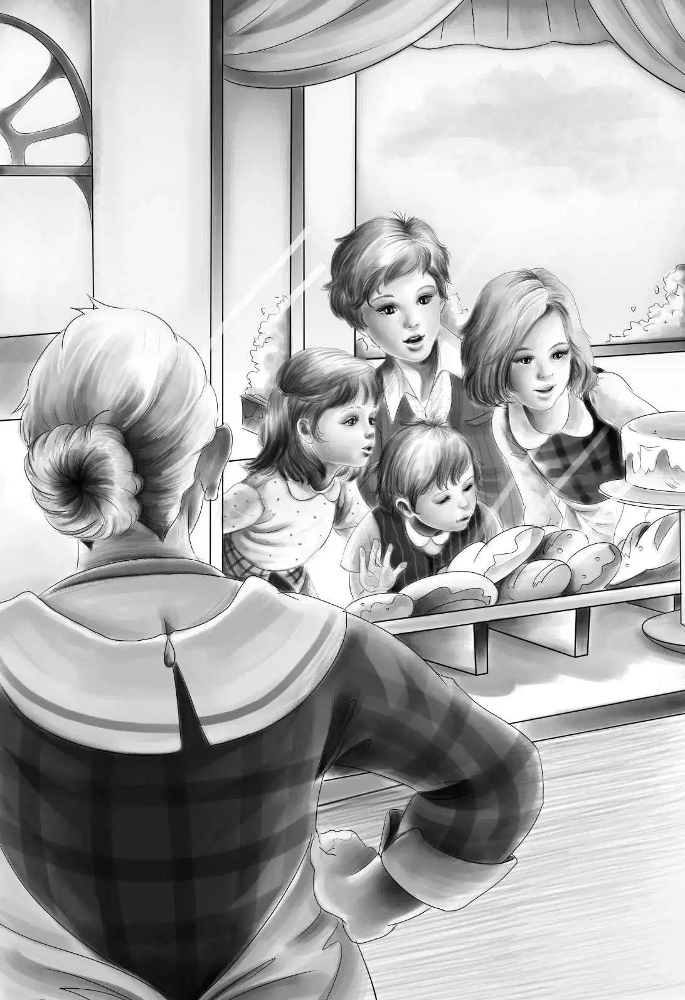

One warm night four children stood in front of a bakery．No one knew them．No one knew where they had come from．
The baker’s wife saw them first，as they stood looking in at the window of her store．The little boy was looking at the cakes，the big boy was looking at the loaves of bread，and the two girls were looking at the cookies．
Now the baker’s wife did not like children．She did not like boys at all．So she came to the front of the bakery and listened，looking very cross．
“The cake is good，Jessie，”the little boy said．He was about five years old．
“Yes，Benny，”said the big girl．“But bread is better for you．Isn’t it，Henry？”
“Oh，yes，”said Henry．”We must have some bread，and cake is not good for Benny and Violet．”
“I like bread best，anyway，”said Violet．She was about ten years old，and she had pretty brown hair and brown eyes．
“That is just like you，Violet，”said Henry，smiling at her．“Let’s go into the bakery．Maybe they will let us stay here for the night．”
The baker’s wife looked at them as they came in．
“I want three loaves of bread，please，”said Jessie．
She smiled politely at the woman，but the woman did not smile．She looked at Henry as he put his hand in his pocket for the money．She looked cross，but she sold him the bread．
Jessie was looking around，too，and she saw a long red bench under each window of the bakery．The benches had flat red pillows on them．
“Will you let us stay here for the night？”Jessie asked．“We could sleep on those benches，and tomorrow we would help you wash the dishes and do things for you．”
Now the woman liked this．She did not like to wash dishes very well．She would like to have a big boy to help her with her work．
“Where are your father and mother？”she asked．
“They are dead，”said Henry．
“We have a grandfather in Greenfield，but we don’t like him，”said Benny．

Jessie put her hand over the little boy’s mouth before he could say more．
“Oh，Benny，keep still！”she said．
“Why don’t you like your grandfather？”asked the woman．
“He is our father’s father，and he didn’t like our mother，”said Henry．“So we don’t think he would like us．We are afraid he would be mean to us．”
“Did you ever see him？”asked the woman．
“No，”answered Henry．
“Then why do you think he would be mean to you？”asked the woman．
“Well，he never came to see us，”said Henry．“He doesn’t like us at all．”
“Where did you live before you came here？”asked the woman．
But not one of the four children would tell her．
“We’ll get along all right，”said Jessie．“We want to stay here for only one night．”
“You may stay here tonight，”said the woman at last．“And tomorrow we’ll see what we can do．”
Henry thanked her politely．
“We are all pretty tired and hungry，”he said．
The children sat down on the floor．Henry cut one of the loaves of bread into four pieces with his knife，and the children began to eat．
“Delicious！”said Henry．
“Well，I never！”said the woman．
She went into the next room and shut the door．
“I’m glad she is gone，”remarked Benny，eating．“She doesn’t like us．”
“Sh，Benny！”said Jessie．“She is good to let us sleep here．”
After supper the children lay down on their red benches，and Violet and Benny soon went to sleep．
But Jessie and Henry could hear the woman talking to the baker．
She said，“I’ll keep the three older children．They can help me．But the little boy must go to the Children’s Home．He is too little．I cannot take care of him．”
The baker answered，“Very well．Tomorrow I’ll take the little boy to the Children’s Home．We’ll keep the others for a while，but we must make them tell us who their grandfather is．”
Jessie and Henry waited until the baker and his wife had gone to bed．Then they sat up in the dark．
“Oh，Henry！”whispered Jessie．“Let’s run away from here！”
“Yes，indeed，”said Henry．“We’ll never let Benny go to a Children’s Home．Never，never！We must be far away by morning，or they will find us．But we must not leave any of our things here．”
Jessie sat still，thinking．
“Our clothes and a cake of soap and towels are in the big laundry bag，”she said．“Violet has her little workbag．And we have two loaves of bread left．Have you your knife and the money？”
“Yes，”said Henry．“I have almost four dollars．”
“You must carry Benny，”said Jessie．“He will cry if we wake him up．But I’ll wake Violet．
“Sh，Violet！Come！We are going to run away again．If we don’t run away，the baker will take Benny to a Children’s Home in the morning．”
The little girl woke up at once．She sat up and rolled off the bench．She did not make any noise．
“What shall I do？” she whispered softly．
“Carry this，” said Jessie．She gave her the workbag．
Jessie put the two loaves of bread into the laundry bag，and then she looked around the room．
“All right，” she said to Henry．“Take Benny now．”
Henry took Benny in his arms and carried him to the door of the bakery．Jessie took the laundry bag and opened the door very softly．All the children went out quietly．They did not say a word．Jessie shut the door，and then they all listened．Everything was very quiet．So the four children went down the street．